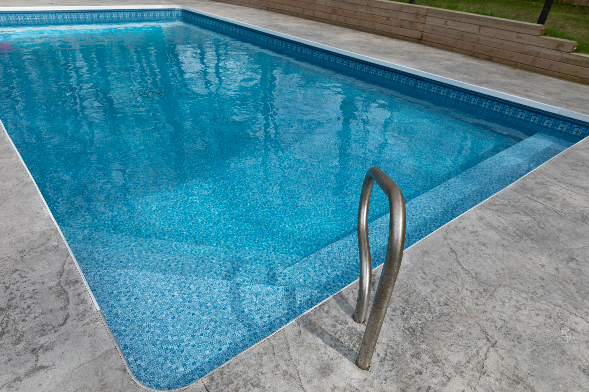

D
Driveway
Driveway flatwork with stable edges, clean garage transitions, and finishes matched to slope and use.
From front entries to backyard patios, we pour flatwork across Omaha that handles plains wind, freeze-thaw, and hail damage on aging flatwork while improving safety, drainage, and curb appeal.
Call (402) 647-5173Omaha Concrete Contractors

Homeowners across Omaha frequently inherit concrete that looked fine at closing but fails under daily use. Thin sections, poor joint placement, and drainage that sends runoff toward the house all compound the damage common in neighborhoods from Dundee, Benson, and Old Market area.
Even modest concrete projects around Omaha need correct pitch, stable edges, and finishes matched to foot or vehicle traffic. Skipping those details leads to callbacks, patchwork, and surfaces that never feel finished.
Upgrading flatwork on a Omaha property should solve the root cause: base failure, poor drainage, or a finish that cannot handle local exposure. That is the difference between a surface that lasts and one that cracks again next year.
As concrete companies Omaha NE property owners call for flatwork upgrades, Omaha Concrete Contractors handles projects from small walk replacements to full backyard patio layouts across Bellevue, Papillion, La Vista, Elkhorn, and Gretna.
Consultations include a clear conversation about how you use each space: vehicle paths, pool access, garage storage, or backyard entertaining. Those details shape joint layout, surface texture, and the right mix for your property.
You get straightforward communication on timing, surface prep, and cure expectations. We place control joints where they belong, finish edges cleanly, and leave the site ready for normal use once concrete has cured.
Call (402) 647-5173 →Driveways, patios, walkways, epoxy flooring, pool decks, and stamped concrete tailored to your property and how you use outdoor space.
Driveway flatwork with stable edges, clean garage transitions, and finishes matched to slope and use.
Outdoor living slabs in broom, smooth, or stamped finishes to complement your home exterior.
Concrete paths shaped to follow grade across Omaha lots while staying comfortable underfoot.
Interior concrete coatings for storage areas, utility rooms, and finished garage spaces.
Flatwork around pools built for comfort, safety, and long-term exposure to sun and moisture.
Stamped finishes that add curb appeal while staying practical for driveways, walks, and outdoor living.
Concrete installation in Omaha NE covers a wide range of needs. Some homeowners want a driveway replacement after years of edge breakdown. Others need a patio with steps to a pool deck and a walkway from the side gate to the front entry. Each scenario calls for different thickness, reinforcement, joint layout, and finish.
Driveways remain a common request across Omaha because they take daily abuse from vehicles, delivery trucks, and weather exposure. Wider layouts accommodate multiple cars and trailers common in neighborhoods throughout Douglas County. Proper base material and compaction matter where clay and silty loam where frost and drought both stress concrete.
Patios give homeowners clean entertaining space without constant upkeep. Broom finishes add grip around grills and wet areas. Stamped and colored concrete adds texture at entry points and rear yards where plain gray slab would feel unfinished against local architecture.
Walkways connect driveways to front doors, side yards, and garden areas. Even short sections need correct pitch and stable edges so they do not chip or tilt after storms. On sloped lots around Omaha, we follow grade changes without awkward steps that collect debris.
Pool deck concrete must account for splash-out, furniture placement, and drainage away from the pool shell. We plan expansion joints, coping transitions, and surface texture so the deck stays comfortable underfoot and directs water where it belongs.
Epoxy flooring refreshes garages, basements, and utility spaces where bare concrete stains and dusts. Coatings add durability, easier cleanup, and a finished look that complements newer Omaha homes and renovated storage areas.
Stamped concrete gives the look of stone or brick without individual pavers shifting after soil movement. We apply patterns and sealers suited to plains wind, freeze-thaw, and hail damage on aging flatwork so color and texture hold up through heat, rain, salt, and sun exposure common across Eastern Nebraska.
Removal and replacement of existing concrete is often part of a Omaha project. Old slabs may need to come out before new base material goes in. We handle breaking, hauling, and disposal so you are not coordinating multiple vendors for one upgrade.



Omaha Concrete Contractors serving Omaha and the greater Eastern Nebraska area.
(402) 647-5173Call or submit the quote form above. Here is what every consultation includes:
We measure your project area, review access for equipment, and identify drainage needs before you commit.
Broom, smooth, stamped, and epoxy options explained for your budget and design goals.
Clear pricing for materials, labor, and timeline with no surprise add-ons on pour day.
We outline how long your specific project will take so you can plan around construction.